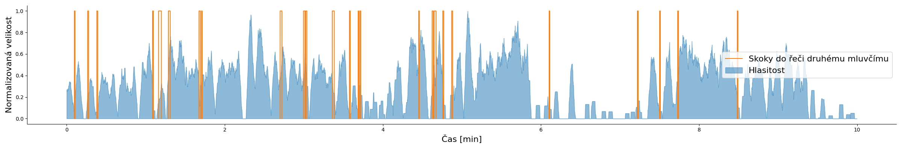

Souhrnná zpráva o sezení č. en_5866
Tato souhrnná zpráva obsahuje nejdůležitější aspekty, které byly zaznamenány analýzou psychoterapeutického sezení s identifikátorem en_5866, které probíhalo 10 minut.
Statistiky získáne z tohoto sezení jsou porovnávány s dlouhodobým průměrem Vašich nebo všech dostupných sezení v systému. Větši odchylky od průměrných hodnot nemusí být nijak varovné, může se jednat pouze o jiných druh terapie.
Všechny níže použité grafy je možné zobrazi v plné velikosti po kliknutí na příslušný graf. Tabulky je možné řadit podle hodnot v příslušných sloupcích.
Poměr mluvy
Poměř mluvy terapeuta aklienta je vyvážený.
Poměr doby mluvy terapeuta k době mluvy klienta je výrazně nižší v porovnání s ostaními sezeními. Jedná se o specifický druh sezení? Je to Váš záměr?
Poměr řeči/ticha
Poměr mluvy a ticha terapeuta.
Poměr mluvy a ticha klienta.
Skoky do řeči a hlasitost
Na následujících grafech jsou ukázány skoky do řeči, kdy jeden mluvčí skočil do řeči druhému. Dále grafy zobrazují měnící se úroveň hlasitosti v průběhu sezení. V případě detekce větších výkyvů, je možné si přiloženou nahrávku opětovně poslechnout a analyzovat, co vedlo k tak razantní změně hlasitosti.
Hlasitost terapeuta v průběhu času.

Hlasitost klienta v průběhu času.
Skoky do řeči obsahuji informaci o tom, jak často se vzájemně v rámci terapie vyrušujete. Nadměrný výskyt skoků do řeči však může vést k nespokojenosti jedné ze stran. Zvažte, zda neskáčete přiliš do řeči klientovi, případně proč klient skáče do řeči Vám.
Následující tabulka obsahuje nejdelší zaznamenané skoky do řeči.
Zvýrazněny jsou transkripce řečníká, který skočil do řeči tomu druhému. V přílohách se nachází celá tabulka.
| 1:9 | 2.19 | It'll be alright. | That's what &Toon said |
| 3:15 | 1.73 | Well good good you need to. | {breath} But it |
| 3:21 | 1.56 | Well did you ever | So I was so tickled. |
| 1:17 | 1.44 | {breath} Da- grandpa said put that little dishwasher in there to work {laugh} [[says laughing]] | {laugh} I know {breath} |
| 4:38 | 1.41 | You don't have to worry about &Doodles. | (( )) oh well that's what I figured. |
| 2:42 | 1.39 | Honey I'm so sorry I wish I could've been there. | (( )) My friends came up. My friend brought me a teddy bear my other friend brought me a plant. |
| 2:38 | 1.24 | Bless your heart. | Yes [[drawn out]]. I didn't have anyone to talk to I just sat there by myself {laugh}. |
| 2:23 | 1.22 | {breath} Well. | {laugh}{breath} |
| 2:59 | 1.17 | You hit the jackpot. | I won crystal. |
| 1:40 | 1.08 | Well good [[drawn out]] | So |
Následující histogramy shrnují počty a délky skoků do řeči v průběhu sezení.
Počty skoků do řeči, kterých se dopustil terapeut.

Počty skoků do řeči, kterých se dopustil klient.
Následující tabulka poukazuje na energeticky nejvýznamější segmenty řeči mluvčích.
Je pravděpodobné, že v těchto momentech chtěl mluvčí zdůraznit určitý aspekt. Mohlo taktéž dojít k rozrušení mluvčího.
| 1:9 | 1.03 | Terapeut | 1.75 | Itll be alright |
| 1:44 | 0.95 | Terapeut | 2.35 | Is it bad |
| 2:7 | 0.61 | Terapeut | 2.14 | Really |
| 2:59 | 1.22 | Terapeut | 2.01 | You hit the jackpot |
| 3:1 | 0.90 | Klient | 1.82 | I know |
| 3:1 | 0.95 | Terapeut | 1.83 | That great |
| 3:21 | 0.77 | Terapeut | 1.81 | Well did you ever |
| 3:42 | 0.67 | Klient | 1.79 | I know |
| 4:5 | 0.34 | Terapeut | 1.79 | yeah |
| 4:30 | 0.76 | Terapeut | 1.94 | Thats right |
| 4:44 | 1.01 | Terapeut | 1.73 | uhhuh she was |
| 5:0 | 2.90 | Terapeut | 1.83 | thats what I thought |
| 5:37 | 0.52 | Terapeut | 1.74 | Right |
| 5:38 | 0.32 | Terapeut | 1.74 | Right |
| 7:25 | 0.55 | Terapeut | 1.98 | yeah |
Emoce klienta
Odhad emocí na základě detekce klíčových slov spojených z různým typem emocí v textovém přepisu nahrávky. Následující grafy jsou pouze orientační, pokud však nálada rapidně klesá nebo roste je vhodné zvážit následný poslech daného úseku.
Změny nálad klienta v průběhu sezení.
Nejčastěji používaná slova
Terapeut nejčastěji používal slovo "Well". Použil ho celkem 20krát v průběhu sezení.
Klient nejčastěji používal slovo "said". Použil ho celkem 33krát v průběhu sezení.
Mimoslovní složky hlasového projevu
O rozpoložení hovořící osoby něco vypovídají i všelijaké těžko popsatelné zvuky při slovním projevu. Kromě různých „ehm ehm...“, „hmmm...“, „éééé...“ mezi mimoslovní složky patří i povzdechnutí a další projevy dýchání.
Terapeut nejčastěji používá mimoslovní složku "uh".
Klient nejčastěji používá mimoslovní složku "uh".
Reakční doba
Průměrná reakční doba terapeuta v průběhu sezení je 0.25 sekund. Průmerná hodnota mezi sezeními se pohybuje kolem 0.46 (+-0.09) sekund.
Průměrná reakční doba klienta v průběhu sezení je 0.29 sekund. Průmerná hodnota mezi sezeními se pohybuje kolem 0.36 (+-0.05) sekund.
Délka jednotlivých vět
Délky souvislých úseků řeči. Příliš krátké věty naznačují velmi stručný rozhovor, dlouhé pak velmi rozvitou konverzaci na dané téma.
Procentuální výskyt vět o příslušné délce na straně terapeuta.
Procentuální výskyt vět o příslušné délce na straně klienta.
Rychlost řeči
Vysoká rychlost řeči může indikovat nadměrný stres, opačně nízká rychlost klid a dobrou náladu.
Měnící se rychlost řeči a její průměr na straně terapeuta.
Měnící se rychlost řeči a její průměr na straně klienta.
Váhaní v monologu
Pomlky, pauzy v řeči, zmlknutí a podobné projevy narušují plynulost řeči. Větné pomlky (mezi jednotlivými větami – trvají 0.5 až 1 sekundu) jsou potřebné, řeč se tak nestává lavinou či směsicí slov a je srozumitelná. Pomlky v jiných místech jsou tzv. „pomlky váhání“. Delší pomlky naznačují, že mluvčí více váhá a není si úplně jist svým sdělením. V nahrávce jsou detekovány všechny pomlky, pomlky o délce menší než 0.5 sekundy můžou být pro účely terapie nezajímavé a je nutné použití této metriky dále zkoumat a konzultovat s dalšími psychoterapeuty.
Průměrný počet váhaní za minutu je 0.70. Terapeut v průběhu aktuálního sezení váhá průměrně 0.70krát za minutu.
Průměrný počet váhaní za minutu je 0.69. Klient v průběhu aktuálního sezení váhá průměrně 0.50krát za minutu.